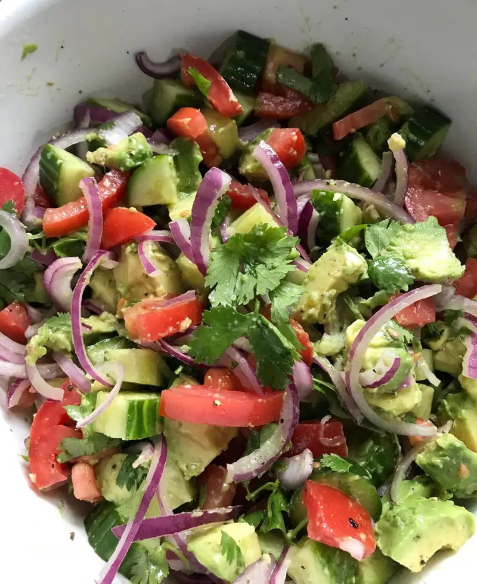

Cucumber, Tomato, Avacado Salad

This dish is a refreshing side to any meal.
Especially when made with farm fresh ingredients if available.
Ingredients
- 1 english cucumber, diced
- 4 roma tomatoes, diced
- 3 ripe avocados, diced
- 1/2 red onion, diced
- 1/4 cup fresh cilantro, chopped
- 1 lemon, juiced
- salt, to taste
- pepper, to taste
- 2 tablespoons olive oil
Directions
- Slice then dice cucumber.
- Slice then dice tomatoes.
- Slice avocado and carefully remove stone. Scoop out then dice.
- Peel onion and remove tops. Then dice.
- Chop cilantro and place in large bowl with previous ingredients.
- Toss salad with olive oil, lemon juice, salt and pepper. Serve in bowl.
- Enjoy.